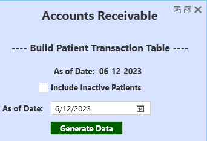
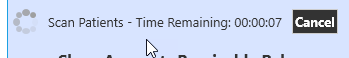
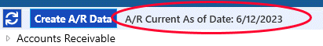
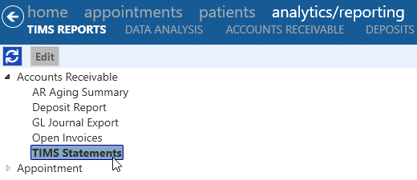
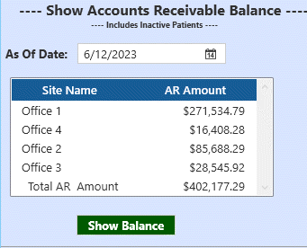

TIMS Accounts Receivable
Accounts receivable balances for all patients can be generated from the Create A/R Data button in analytics/reporting - TIMS REPORTS. Once the balances have been generated, AR reports (including statements) can be run.
 Note: If the practice is integrated and also syncing with QuickBooks®, balances in TIMS may not match if manual entries have been made in QuickBooks. Contact TIMS Support for more details.
Note: If the practice is integrated and also syncing with QuickBooks®, balances in TIMS may not match if manual entries have been made in QuickBooks. Contact TIMS Support for more details.

Build Transaction Table

- The bolded "As of Date" will display the last date when the Patient Transaction table was built.
- Inactive patients will not be included unless the "Include Inactive Patients" box is checked.
- Choose the new "As of Date" you wish to generate the balances for. Generally this will be today's date, or the day you want to run statements for, such as the end of the previous month.
- All transactions with an open balance will be included, along with all transactions 40 days prior to the current date.
- If transactions have a zero balance, they will be included only if the date falls within 40 days prior to the current date.
- Click the Generate Data button to generate balances - depending on the size of your database, this may take several minutes. Progress is shown with estimated time remaining. If you wish to abandon the process, click the black Cancel button.

- Included in a patient's accounts receivable balance will be:
- Finalized, non-voided POS documents
- Invoices and Credit Memos
- Payments/Refunds
- Insurance Transfers
- Generated claims (transmitted or not)
- Claim adjustments
- Claim payments
- When the data is finished generating, the "As of Date" will be displayed at the top of the reports menu.

- Click the black Close button to exit the Accounts Receivable window.
Claims will be flagged as "Insurance Pending" on statements if all payers on the claim have not had either a payment or adjustment posted and the claim is not over a year old. If a claim is less than a year old, has no activity, and should no longer be considered insurance pending - it can be set to patient responsibility by posting a PR-3 adjustment for the full amount.
A recurring task can also be setup to generate the A/R Data automatically - contact TIMS Support for assistance or details.
Printing Statements
Once the Transaction Table has been built, statements can be printed from the TIMS Reports menu, under Accounts Receivable.

Statements can be printed for selected sites only, and you will have the option to include statements with a zero balance or not. In addition to statements, you can also run the reports AR Aging Summary and Open Invoices to see specific details for each patient.
Show Accounts Receivable Balance

Accounts Receivable balances as of a certain date can be displayed by site. Choose the current date or a date in the past, then click the Show Balance button. Note: this will only display the AR balances on the screen, it will not generate the full patient transaction table needed for reports and statements.
AR Balance will include:
- Inactive sites (if there are open balances on the date selected)
- Inactive patients (if there are open balances on the date selected)
- Click the black Close button to exit the Accounts Receivable window.
Auto Generate Accounts Receivable Data
New in version 6.08, you can now create a task to build the transaction table (generate A/R) at a designated time each day. If the logged in user has permission, this button will appear under Centers - Billing:

To setup a new A/R task:
- Click the Daily A/R Task button.

- The new task window will popup.

- The time will default to the current time. Adjust it to the time you would like the A/R to generate each day.
- Click Save or Cancel to abandon your changes.
Once the task has been setup and run at the designated time, you can click the button again to see when it was last run and the results. You can also edit the task to change the task time, if necessary.